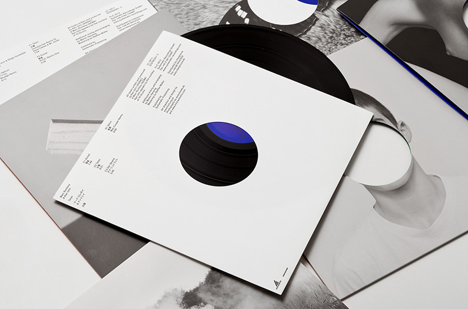
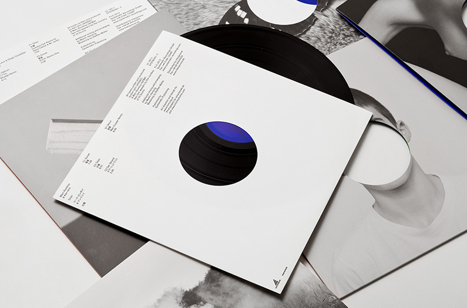

"Anyone familiar with the work of Eike Konig’s brilliant Berlin-based studio HORT knows they’re up there with the best of them. But even by their own sky-high standards this art direction for the first collaboration between techno musicians Marc Romboy and Ken Ishii is fantastic. Working across a special edition vinyl box set, CD, digital releases, a poster and apparel, HORT worked with photographer Michael Kohls to produce this striking visual language. HORT said: “Our creative direction nods to music’s physical medium and the techniques involved in its production. Die-cuts make the LP and CD visible, through this method the missing piece becomes a key graphic element.”"